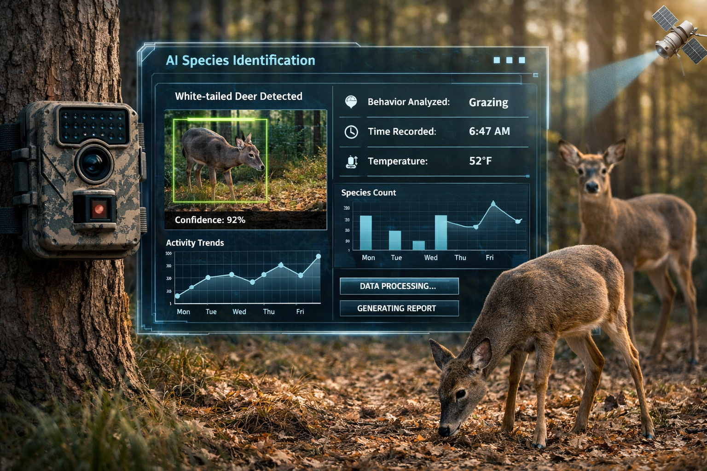

The MammAlps dataset uses multi-view camera traps to monitor animal behavior in the Swiss Alps.
Decoding Wildlife Behavior with MammAlps
January 25, 2026
Researchers in the Swiss Alps have introduced MammAlps, a multimodel video dataset designed to help AI systems better recognize and interpret complex wildlife behaviors. While traditional camera traps produce massive amounts of footage that are difficult to analyze at scale, MammAlps couples recordings with audio and scene context-like vegetation or water sources-to create ecologically meaningful training data.
This shift allows AI to move beyond simple species identification and toward "seeing behavior clsasification, such as stalking or group play, across real ecosytems.
My take: Having spent some time tracking subtle behaviors myself, I understand how game-changing this is. AI can identify patterns that are easy to miss with the naked eye, especially when an animal moves quickly or performs behaviors in quick succession.
Source: EPFL News